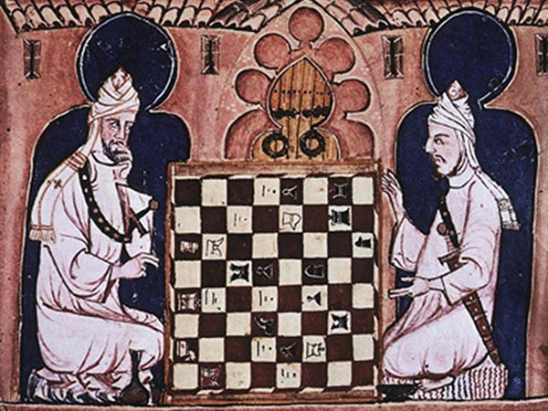

History of Chess
Early Chess
Chess is thought to have originated in northern India almost 1500 years ago. The rules were much different however, with only a little resemblance to Chess today. The game eventually found its way to Europe, where it underwent fundamental changes, bringing it closer to modern Chess. It was not until about 500 years ago though (around 1000 years after the game was first played), that modern chess was developed.
Professional Chess
The first chess tournament was held in 1851 in London. as more people played the game, more tournaments were held. Eventually this led to a match between Johannes Zukertort and Wilhelm Steinitz, which would lead to Steinitz becoming the first World Chess Champion.
Modern Chess
Now, there are several chess organizations that host tournaments world-wide. The World Chess Championship is run by FIDE, the organization which is recognized as official, has a tournament to determine who is eligible to challenge the champion.